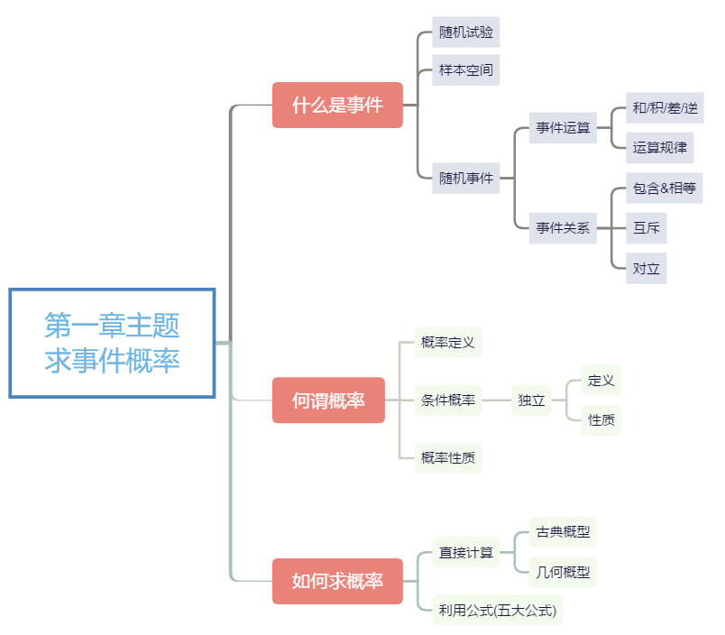

《概率论与数理统计》是利用微积分为工具，研究随机现象的统计规律性！而第一章 随机事件和概率是整个概率论和数理统计的工具和基础，必须踏实地学好！这一章的中心主题是: 求事件的概率。
下面将围绕如下三个问题讨论:
- 什么是事件?
- 何谓概率？
- 如何求概率？

什么是事件？
1.随机试验
称满足如下三个条件的试验为随机试验，简称试验:
- 相同条件下可重复；
- 所有基本结果确定；
- 试验前结果未知.
2.样本空间
随机试验$\mathbf{E}$的所有可能的基本结果构成的集合称为$\mathbf{E}$的样本空间，记作$\mathbf{\Omega}$.
每一个基本结果称为样本点，记作$\mathbf{\omega}$.
3.随机事件
样本空间$\mathbf{\Omega}$的子集称为随机事件.
$\mathbf{\Omega}$ : 必然事件
$\mathbf{\emptyset}$ : 不可能事件
4.事件的运算
| 运算 | 符号 |
|---|---|
| 和(并) | $A + B$或$A \cup B$ |
| 积(交) | $AB$或$A \cap B$ |
| 差 | $A - B$ |
| 逆(补) | $\bar{A}$ |
5. 事件的关系
| 关系 | 符号 |
|---|---|
| 包含 | $A \supset B$ |
| 相等 | $A = B$ |
| 互斥(不相容) | $AB = \emptyset$ |
| 对立 | $AB = \emptyset且A + B = \Omega$ |
6.事件运算的性质
德摩根律 ： $\mathbf{\overline{A + B} = \bar{A}\bar{B}, \overline{AB} = \bar{A} + \bar{B}}.$
何谓概率？
1.概率的公理化定义
设$\mathbf{E}$为随机试验，$\mathbf{\Omega}$为样本空间，称随机事件函数$\small \mathbf{P(x)}$为概率，若$\small \mathbf{P(x)}$满足:
- 非负性 : $\small \mathbf{P(A) \ge 0}$,对于任意的事件$\small \mathbf{A}$;
- 规范性 : $\small \mathbf{P(\Omega) = 1}$;
- 可列可加性 : 设$\small \mathbf{A_1,A_2,…,A_n,…}$为两两互斥事件，
$\small \mathbf{P(A_1 + A_2 + … + A_n + …) = P(A_1) + P(A_2) + … + P(A_n)} $
2.概率的性质
- $P(\emptyset) = 0$;
- $设A_1,A_2,A_3,…,A_n为两两互斥事件，P(A_1 + A_2 + A_3 + … + A_n)\\= P(A_1) + P(A_2) + P(A_3) + … + P(A_n);$
- $0 \le P(A) \le 1, 对于任意事件A$;
- $P(\bar{A}) = 1 - P(A)$;
- $若A \subset B, 则 P(A) \le P(B)$.
3.条件概率&事件的独立性
1.条件概率
设$P(A) \gt 0$, 则在事件$A$发生的条件下，事件$B$发生的概率定义为:
$\qquad \qquad \qquad \qquad \displaystyle P(B|A) \triangleq \frac{P(AB)}{P(A)}$
条件概率$\displaystyle P(x|A)$也是概率，因此具有概率的所有性质，比如：
$\qquad P(B+C|A) = P(B|A) + P(C|A) - P(BC|A)$
$\qquad \displaystyle P(\bar{B}|A) = 1 - P(B|A)$
$\qquad \displaystyle P(B-C|A) = P(B|A) - P(BC|A)$
2.事件的独立性
若$\small \mathbf{P(AB) = P(A) P(B)}$, 则称事件$\small \mathbf{A, B}$相互独立.
若$\left\{ \begin{array}{rcl} \small \mathbf{P(AB) = P(A)P(B)}\\
\small \mathbf{P(BC) = P(B)P(C)}\\
\small \mathbf{P(AC) = P(A)P(C)}\\
\small \mathbf{P(ABC) = P(A)P(B)P(C)}\end{array}\right.$,则称事件$\small \mathbf{A,B,C}$相互独立.
[注]
- 三个事件两两独立，则三个事件不一定相互独立;
- 若$\small \mathbf{A,B}$相互独立，则$\small \mathbf{\bar{A},B; A,\bar{B}; \bar{A},\bar{B}}$都相互独立;
- 若$\small \mathbf{ P(A)= 0}$或$\small \mathbf{P(A) = 1}$, 则事件$\small \mathbf{A}$与任意事件独立;
- 事件独立的等价条件
- 设$\small \mathbf{P(A) = 0}$,则$\small \mathbf{A,B}$独立的充要条件为:$\small \mathbf{P(B|A) = P(B)}$.
- 设$\small \mathbf{0 \lt P(A) \lt 1}$, 则$\small \mathbf{A, B}$独立的充要条件为:$\small \mathbf{P(B|A) = P(B|\bar{A})}$.
- 设$\small \mathbf{P(A) = 0}$,则$\small \mathbf{A,B}$独立的充要条件为:$\small \mathbf{P(B|A) = P(B)}$.
- 互斥、对立&独立事件的比较
事件 定义 概率性质 互斥 $\small \mathbf{AB = \emptyset}$ $\small \mathbf{P(A+B) = P(A) + P(B)}$ 对立 $\small \mathbf{AB = \emptyset}$且$\small \mathbf{A+B = \Omega}$ $\small \mathbf{P(B) = 1 - P(A)}$ 独立 $\small \mathbf{P(AB) = P(A)P(B)}$
如何求概率？
1.古典概型
样本空间$\small \mathbf{\Omega}$有限且每个基本结果等可能发生.则随机事件$\small \mathbf{A}$的概率为:
$\displaystyle \quad \mathbf{P(A) = \frac{k}{n}}$
其中，$\small \mathbf{n}$为样本空间$\small \mathbf{\Omega}$的样本点总数，k为随机事件$\small \mathbf{A}$中样本点的总数.
2.几何概型
样本空间$\small \mathbf{\Omega}$无限且每个基本结果等可能发生.则随机事件$\small \mathbf{A}$的概率为:
$\displaystyle \quad \mathbf{P(A) = \frac{A的几何度量}{\Omega的几何度量}}$
3.贝努利概型
若随机试验$\mathbf{E}$满足:
- 每次试验只有两种可能结果({$\small \mathbf{A, \bar{A}}$)；
- 概率不发生变化($\small \mathbf{P(A) = p}$);
- 各次试验相互独立.
试验$\mathbf{E}$重复n次，则称这样的试验为n重贝努利试验，事件$\small \mathbf{A}$发生k次的概率为:
$\quad \displaystyle \mathbf{P_n(k) = C^k_np^k(1-p)^{n-k}}$
4.五大公式
1.加法公式
$\displaystyle \mathbf{P(A+B) = P(A) + P(B) - P(AB)\\P(A+B+C) = P(A) + P(B)+P(C)\\ \qquad\qquad\qquad\qquad-P(AC)-P(BC)-P(AB)+P(ABC)}$.
2.减法公式
$\displaystyle \mathbf{P(A-B) = P(A) - P(AB) = P(A\bar{B})}$
3.乘法公式
$\displaystyle \mathbf{P(AB) = P(A)P(B|A) = P(B)P(A|B)\\P(ABC) = P(A)P(B|A)P(C|AB)}$
4.全概率公式
设$\small \mathbf{A_1,A_2,…,A_n}$为两两互斥，且$\small \mathbf{A_1+A_2+…+A_n = \Omega}$(称$\small \mathbf{A_1,A_2,…,A_n}$为完备事件组)，则
$\displaystyle\mathbf{P(B) = P(A_1)P(B|A_1)+P(A_2)P(B|A_2)\\
\qquad\qquad+…+P(A_n)P(B|A_n)}$
5.贝叶斯公式
设$\small \mathbf{A_1,A_2,…,A_n}$为完备事件组，则
$\displaystyle \mathbf{P(A_k|B) = \frac{P(A_k)P(B|A_k)}{\sum_{i=1}^nP(A_i)P(B|A_i)}}$
[注]:
$\mathbf{P(AB)} = \left\{ \begin{array}{cc} \small \mathbf{P(A)P(B|A)\qquad\qquad\qquad\quad P(A) \gt 0}\\
\small \mathbf{P(B)P(A|B)\qquad\qquad\qquad\quad P(B) \gt 0}\\
\small \mathbf{P(A)P(B)\qquad\qquad\qquad\qquad A,B}\normalsize\mathbf{独立}\\
\small \mathbf{0\qquad\qquad\qquad\qquad\qquad\qquad}\normalsize\mathbf{互斥}\\
\small \mathbf{P(B)\qquad\qquad\qquad\qquad\qquad A \subset B}\\
\small \mathbf{P(A)+P(B)-P(A+B)\qquad}\normalsize\mathbf{加法公式}\end{array}\right.$